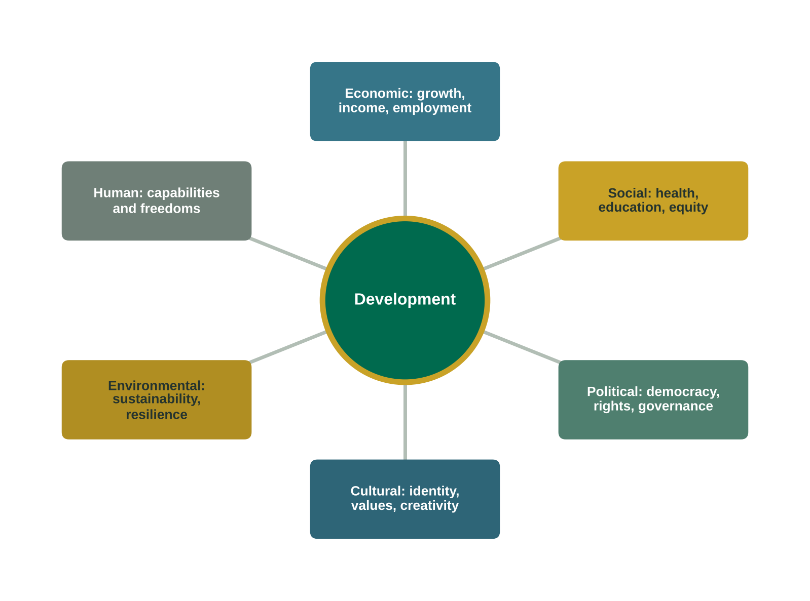
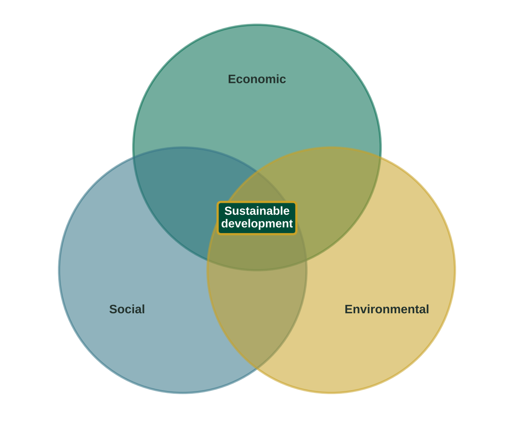
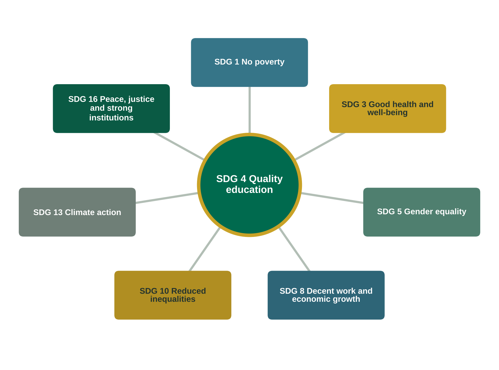
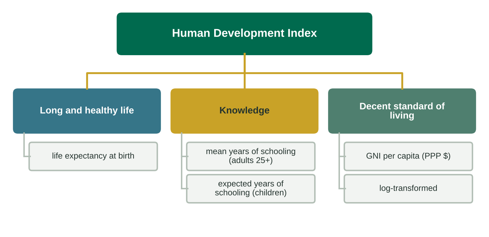

PC 119 শিক্ষা ও উন্নয়ন (Education and Development)
উন্নয়ন তত্ত্ব ও সূচক, মানব উন্নয়ন, বাংলাদেশের পরিকল্পনা কাঠামো এবং শিক্ষার ভূমিকা
এটি ইংরেজি পাঠ নোটের বাংলা সংস্করণ। পাঠতালিকা ও তথ্যসূত্রের বইয়ের নাম মূল ভাষায় রাখা হয়েছে, যাতে লাইব্রেরিতে সহজে খুঁজে পান।
সূচিপত্র
এই কোর্স সম্পর্কে
উন্নয়ন কী, কীভাবে তা পরিমাপ করা হয় এবং এতে শিক্ষার অবদান কী? এই কোর্সটি উন্নয়নের ধ্রুপদি তত্ত্বগুলো (রস্টো, কাঠামোগত পরিবর্তন, মার্ক্সবাদী, নির্ভরশীলতা, আধুনিকায়ন ও মানবপুঁজি) থেকে মানব উন্নয়ন ও টেকসই উন্নয়নের প্রতিমানে (paradigm) অগ্রসর হয়; GDP, GNI, গিনি সহগ ও মানব উন্নয়ন সূচকসহ অর্থনৈতিক ও সামাজিক সূচকগুলো ব্যাখ্যা করে; বাংলাদেশের পরিকল্পনা কাঠামো (পরিকল্পনা কমিশন, NEC, ECNEC, প্রেক্ষিত ও পঞ্চবার্ষিক পরিকল্পনা, রূপকল্প ২০৪১) এবং শিক্ষা উন্নয়ন প্রকল্পগুলো বর্ণনা করে; এবং জাতীয় উন্নয়নে আনুষ্ঠানিক, উপানুষ্ঠানিক, কারিগরি ও জরুরি অবস্থায় শিক্ষা এবং নারীশিক্ষার ভূমিকা বিশ্লেষণ করে।
কোর্সের উদ্দেশ্য
এসডিজিসহ (SDGs) উন্নয়নের ধারণা, মাত্রা, তত্ত্ব ও সমকালীন সমস্যাবলি ব্যাখ্যা করা।
উন্নয়নের অর্থনৈতিক ও সামাজিক সূচক এবং মানব উন্নয়ন সূচকের ব্যাখ্যা দেওয়া।
মানবসম্পদ উন্নয়ন ও মানব উন্নয়নের মধ্যে পার্থক্য করা।
বাংলাদেশের উন্নয়ন পরিকল্পনা প্রক্রিয়া ও শিক্ষা প্রকল্পগুলো বর্ণনা করা এবং উন্নয়নে শিক্ষার ভূমিকা বিশ্লেষণ করা।
প্রতিটি ইউনিট অফিশিয়াল পাঠ্যসূচির ক্রম অনুসরণ করে। প্রথমে মূল আলোচনা পড়ুন, তারপর মূল কথা বক্সগুলো, এরপর পরীক্ষার প্রস্তুতি প্রশ্ন দিয়ে নিজেকে যাচাই করুন।
সোনালি বক্স = অবশ্যই মনে রাখার বিষয়। সবুজাভ নীল বক্স = সংজ্ঞা ও পড়ার কৌশল। সবুজ বক্স = বাংলাদেশ প্রেক্ষাপট।
শেষ অধ্যায়টি বিশ্ববিদ্যালয় পরীক্ষার ধরনে একটি প্রশ্নব্যাংক (উত্তরসহ MCQ, সংক্ষিপ্ত ও রচনামূলক প্রশ্ন), এরপর APA 7th রীতিতে পূর্ণ তথ্যসূত্র।
ভর্তি, বাজেট ও নীতি সংক্রান্ত পরিসংখ্যান প্রতি বছর বদলায়। পরীক্ষার আগে BANBEIS, DPE, UGC ও UNESCO-এর সর্বশেষ তথ্য দেখে নিন।
ইউনিট ১: উন্নয়নের ধারণা, তত্ত্ব ও সমস্যাবলি
অধ্যায়ের সারসংক্ষেপ
উন্নয়ন হলো মানুষের জীবনমান উন্নত করার একটি বহুমাত্রিক প্রক্রিয়া: আয় ও উৎপাদনশীলতা বৃদ্ধি, পাশাপাশি স্বাস্থ্য, জ্ঞান, স্বাধীনতা, মর্যাদা, ন্যায্যতা ও পরিবেশগত টেকসইতার সম্প্রসারণ। টোডারো ও স্মিথ (Todaro and Smith) (2020) উন্নয়নের তিনটি মূল মূল্যবোধ চিহ্নিত করেছেন: জীবনধারণ (মৌলিক চাহিদা পূরণ), আত্মমর্যাদা (অন্যের হাতিয়ার না হয়ে একজন মানুষ হিসেবে মর্যাদা) এবং দাসত্ব থেকে মুক্তি (নিজে বেছে নেওয়ার সামর্থ্য)।
এই অধ্যায়ে আলোচিত বিষয়: উন্নয়নের অর্থ, ধারণা ও মাত্রা; উন্নয়নের পরিভাষা; অনুন্নত, উন্নয়নশীল ও উন্নত দেশ; উন্নয়নের তত্ত্বসমূহ; সাম্প্রতিক প্রবণতা: মানব উন্নয়ন ও টেকসই উন্নয়ন; উন্নয়নের সমস্যাবলি; সামগ্রিক উন্নয়ন ও খণ্ডিত উন্নয়ন; উন্নয়নের লক্ষ্যমাত্রা হিসেবে এসডিজি।
শিক্ষাক্রমে যা বলা হয়েছেইউনিট ১: উন্নয়নের ধারণা, তত্ত্ব ও সমস্যাবলি · ১০ সংযোগ ঘণ্টা
এই ইউনিট শেষে শিক্ষার্থীরা যা পারবে
- উন্নয়নের বিভিন্ন ধারণা ও মাত্রা ব্যাখ্যা করা
- উন্নয়নের বিভিন্ন চিন্তা ও তত্ত্ব বর্ণনা করা
- উন্নয়নের বিভিন্ন চিন্তা ও তত্ত্ব অন্বেষণ করা
- উন্নয়নের বিভিন্ন দিক বিশ্লেষণ করা
- উন্নয়নের অর্থ, ধারণা ও মাত্রা
- উন্নয়নের পরিভাষা
- উন্নয়নের বিভিন্ন চিন্তা: অনুন্নত, উন্নয়নশীল ও উন্নত
- উন্নয়নের তত্ত্বসমূহ: ডব্লিউ. ডব্লিউ. রস্টোর অর্থনৈতিক প্রবৃদ্ধির স্তর, কাঠামোগত পরিবর্তন মডেল, মার্ক্সবাদী দৃষ্টিভঙ্গি, উন্নয়নের নির্ভরশীলতা তত্ত্ব, আধুনিকায়ন তত্ত্ব এবং মানব
- উন্নয়নের সাম্প্রতিক প্রবণতা: মানব উন্নয়ন তত্ত্ব ও টেকসই উন্নয়ন
- উন্নয়নের সমস্যাবলি (ব্যক্তি, শ্রেণি, জেন্ডার, নৃগোষ্ঠী ইত্যাদি)
- সামগ্রিক উন্নয়ন ও খণ্ডিত উন্নয়ন
- উন্নয়নের লক্ষ্যমাত্রা হিসেবে এসডিজি
১.১ উন্নয়নের অর্থ, ধারণা ও মাত্রা
উন্নয়ন (development) হলো মানুষের জীবনমান উন্নত করার একটি বহুমাত্রিক প্রক্রিয়া: আয় ও উৎপাদনশীলতা বৃদ্ধি, পাশাপাশি স্বাস্থ্য, জ্ঞান, স্বাধীনতা, মর্যাদা, ন্যায্যতা ও পরিবেশগত টেকসইতার সম্প্রসারণ। টোডারো ও স্মিথ (Todaro and Smith) (2020) উন্নয়নের তিনটি মূল মূল্যবোধ চিহ্নিত করেছেন: জীবনধারণ (sustenance) (মৌলিক চাহিদা পূরণ), আত্মমর্যাদা (self-esteem) (অন্যের হাতিয়ার না হয়ে একজন মানুষ হিসেবে মর্যাদা) এবং দাসত্ব থেকে মুক্তি (freedom from servitude) (নিজে বেছে নেওয়ার সামর্থ্য)। অমর্ত্য সেন (Amartya Sen) (1999) উন্নয়নকে সংজ্ঞায়িত করেছেন "মানুষ যে প্রকৃত স্বাধীনতা ভোগ করে তা সম্প্রসারণের একটি প্রক্রিয়া" হিসেবে (Development as Freedom)।

চিত্র ১। উন্নয়নের মাত্রাসমূহ
১.২ উন্নয়নের পরিভাষা
| পরিভাষা | অর্থ |
|---|---|
| অর্থনৈতিক প্রবৃদ্ধি (economic growth) | পণ্য ও সেবার উৎপাদন বৃদ্ধি (GDP), একটি পরিমাণগত পরিবর্তন |
| অর্থনৈতিক উন্নয়ন (economic development) | প্রবৃদ্ধির সঙ্গে কাঠামোগত পরিবর্তন ও উন্নত জীবনযাত্রার মান, একটি গুণগত পরিবর্তন |
| অনুন্নয়ন (underdevelopment) | নিম্ন আয়, নিম্ন উৎপাদনশীলতা, দারিদ্র্য, পরনির্ভরতা ও দুর্বল প্রতিষ্ঠানের একটি অবস্থা |
| আধুনিকায়ন (modernisation) | ঐতিহ্যগত সমাজ থেকে আধুনিক (শিল্পায়িত, নগরায়িত, যুক্তিনির্ভর) সমাজে রূপান্তর |
| টেকসই উন্নয়ন (sustainable development) | "এমন উন্নয়ন যা ভবিষ্যৎ প্রজন্মের নিজস্ব চাহিদা পূরণের সামর্থ্যকে ক্ষুণ্ন না করে বর্তমানের চাহিদা পূরণ করে" (Brundtland Commission, WCED, 1987) |
| মানব উন্নয়ন (human development) | মানুষের পছন্দের সুযোগ ও সক্ষমতার সম্প্রসারণ (UNDP, 1990) |
| অন্তর্ভুক্তিমূলক প্রবৃদ্ধি (inclusive growth) | এমন প্রবৃদ্ধি যা সকল গোষ্ঠীকে উপকৃত করে এবং বৈষম্য হ্রাস করে |
| দারিদ্র্যরেখা (poverty line) | মৌলিক চাহিদা পূরণের জন্য ন্যূনতম আয়; বিশ্বব্যাংকের আন্তর্জাতিক দারিদ্র্যরেখা দৈনিক US$2.15 (2017 PPP), যা ২০২৫ সালে সংশোধন করে US$3.00 (2021 PPP) করা হয়েছে |
| স্বল্পোন্নত দেশ (LDC) থেকে উত্তরণ | বাংলাদেশ ২০১৮ ও ২০২১ সালে জাতিসংঘের তিনটি মানদণ্ডই (মাথাপিছু আয়, মানবসম্পদ সূচক, অর্থনৈতিক ঝুঁকিপ্রবণতা সূচক) পূরণ করে, এবং ২০২৬ সালে স্বল্পোন্নত দেশের মর্যাদা থেকে উত্তরণের জন্য সুপারিশপ্রাপ্ত হয় |
১.৩ অনুন্নত, উন্নয়নশীল ও উন্নত দেশ
বিশ্বব্যাংক মাথাপিছু GNI (অ্যাটলাস পদ্ধতি) অনুযায়ী অর্থনীতিগুলোকে নিম্ন আয়, নিম্ন-মধ্যম আয়, উচ্চ-মধ্যম আয় ও উচ্চ আয়ের দেশে শ্রেণিবিন্যস্ত করে; প্রতি বছর ১ জুলাই সীমাগুলো সংশোধন করা হয়। বাংলাদেশ ২০১৫ সালে নিম্ন-মধ্যম আয়ের দেশে পরিণত হয়। জাতিসংঘ "উন্নত", "উন্নয়নশীল" ও "স্বল্পোন্নত" শ্রেণি ব্যবহার করে। "তৃতীয় বিশ্ব" ও "গ্লোবাল সাউথ"-এর মতো পরিভাষাও ব্যবহৃত হয়, যদিও এগুলোর যথার্থতা নিয়ে বিতর্ক রয়েছে। উন্নয়নশীল দেশগুলোর যেসব বৈশিষ্ট্য প্রায়ই উল্লেখ করা হয়: নিম্ন মাথাপিছু আয়, কৃষির ওপর অতিনির্ভরতা, দ্রুত জনসংখ্যা বৃদ্ধি, উচ্চ বেকারত্ব ও ছদ্মবেকারত্ব, দ্বৈততা (আধুনিক ও ঐতিহ্যগত খাত), প্রাথমিক পণ্য রপ্তানির ওপর নির্ভরতা এবং দুর্বল প্রতিষ্ঠান।
১.৪ উন্নয়নের তত্ত্বসমূহ
রস্টোর অর্থনৈতিক প্রবৃদ্ধির স্তর (১৯৬০)
ডব্লিউ. ডব্লিউ. রস্টো (W. W. Rostow) তাঁর The Stages of Economic Growth: A Non-Communist Manifesto গ্রন্থে পাঁচটি রৈখিক স্তরের প্রস্তাব করেন:
")
চিত্র ২। রস্টোর অর্থনৈতিক প্রবৃদ্ধির পাঁচটি স্তর (১৯৬০)
শিক্ষার ভূমিকা: পূর্বশর্তগুলো গড়ে তোলে (সাক্ষরতা, বৈজ্ঞানিক মনোভাব, দক্ষ শ্রমশক্তি)। সমালোচনা: ইউরোপকেন্দ্রিক, ধরে নেয় যে সব দেশ একই পথ অনুসরণ করে, এবং বাহ্যিক সীমাবদ্ধতা ও বৈষম্যকে উপেক্ষা করে।
কাঠামোগত পরিবর্তন মডেল (Lewis, 1954; Chenery)
স্যার আর্থার লুইসের (Sir Arthur Lewis) দ্বি-খাত মডেল: উদ্বৃত্ত শ্রম নিম্ন উৎপাদনশীল ঐতিহ্যগত (কৃষি) খাত থেকে উচ্চ উৎপাদনশীল আধুনিক (শিল্প) খাতে স্থানান্তরিত হয়; পুনর্বিনিয়োগকৃত মুনাফা প্রবৃদ্ধিকে চালিত করে, যতক্ষণ না উদ্বৃত্ত শ্রম নিঃশেষে শোষিত হয় ("লুইস বাঁক বিন্দু")। চেনেরির (Chenery) উন্নয়নের ধরন কৃষি থেকে শিল্প ও সেবা খাতে স্থানান্তর দেখায়। শিক্ষার ভূমিকা: আধুনিক খাতের জন্য দক্ষতা। সমালোচনা: আধুনিক খাতে পূর্ণ কর্মসংস্থান ও শ্রমনির্ভর বিনিয়োগ ধরে নেয়; অথচ নগরে বেকারত্ব একটি সাধারণ চিত্র।
মার্ক্সবাদী দৃষ্টিভঙ্গি
উন্নয়ন চালিত হয় শ্রেণিসংগ্রাম এবং উৎপাদন পদ্ধতি-র পরিবর্তনের মাধ্যমে (আদিম সাম্যবাদ → দাসপ্রথা → সামন্তবাদ → পুঁজিবাদ → সমাজতন্ত্র → সাম্যবাদ)। পুঁজিবাদ প্রবৃদ্ধি সৃষ্টি করে, কিন্তু শোষণ ও বৈষম্যও জন্ম দেয়। শিক্ষা উপরিকাঠামোর অংশ, যা পুঁজিবাদী সম্পর্ককে পুনরুৎপাদন করে (Bowles & Gintis), তবে এটি শ্রেণিচেতনাও জাগ্রত করতে পারে।
নির্ভরশীলতা তত্ত্ব (dependency theory)
লাতিন আমেরিকান পণ্ডিতগণ (রাউল প্রেবিশ (Raúl Prebisch), আন্দ্রে গুন্ডার ফ্রাংক (André Gunder Frank), সামির আমিন (Samir Amin), কার্দোসো ও ফালেত্তো (Cardoso and Faletto)) এই তত্ত্ব গড়ে তোলেন। অনুন্নয়ন কোনো আদি অবস্থা নয়, বরং কেন্দ্রের (ধনী) দেশগুলোর আধিপত্যাধীন বিশ্ব-অর্থনীতিতে প্রান্তিক (দরিদ্র) দেশগুলোর অসম অন্তর্ভুক্তির ফল। ফ্রাংকের ভাষায় "অনুন্নয়নের উন্নয়ন"। ওয়ালারস্টাইনের (Wallerstein) বিশ্ব-ব্যবস্থা তত্ত্ব (world-systems theory) এর সঙ্গে কেন্দ্র, আধা-প্রান্ত ও প্রান্তের ধারণা যুক্ত করে। শিক্ষা: ঔপনিবেশিক ও পাশ্চাত্যমুখী শিক্ষা "মেধা পাচার (brain drain)" ও সাংস্কৃতিক নির্ভরশীলতা সৃষ্টি করতে পারে (Carnoy, 1974, Education as Cultural Imperialism)। নীতিগত সুপারিশ: আমদানি প্রতিস্থাপন, স্বনির্ভরতা, দক্ষিণ–দক্ষিণ সহযোগিতা।
আধুনিকায়ন তত্ত্ব (modernisation theory)
ট্যালকট পারসন্স (Talcott Parsons), ড্যানিয়েল লার্নার (Daniel Lerner), অ্যালেক্স ইঙ্কেলেস (Alex Inkeles) ও ডেভিড ম্যাকক্লেল্যান্ড (David McClelland)-এর সঙ্গে সম্পৃক্ত (১৯৫০–৬০-এর দশক)। উন্নয়নের জন্য ঐতিহ্যগত মূল্যবোধ, প্রতিষ্ঠান ও ব্যক্তিত্ব থেকে আধুনিক মূল্যবোধ, প্রতিষ্ঠান ও ব্যক্তিত্বে (অর্জনমুখিতা, যুক্তিবাদিতা, পরিবর্তনের প্রতি উন্মুক্ততা) রূপান্তর প্রয়োজন। ইঙ্কেলেস ও স্মিথের (1974) Becoming Modern গবেষণায় দেখা যায়, বিদ্যালয়শিক্ষাই "আধুনিক" মনোভাবের সবচেয়ে শক্তিশালী পূর্বাভাসক। সমালোচনা: জাতিকেন্দ্রিক; কাঠামোগত ও আন্তর্জাতিক সীমাবদ্ধতাকে উপেক্ষা করে।
মানবপুঁজি তত্ত্ব (human capital theory)
থিওডোর শুল্ৎস (Theodore Schultz) (1961, "Investment in Human Capital") ও গ্যারি বেকার (Gary Becker) (1964) যুক্তি দেন যে ভৌত পুঁজিতে বিনিয়োগের মতোই শিক্ষা ও প্রশিক্ষণ হলো বিনিয়োগ, যা উৎপাদনশীলতা ও আয় বৃদ্ধি করে। সাক্ষ্যপ্রমাণ: শিক্ষার প্রতিদানের হার (rate of return to education) (Psacharopoulos & Patrinos, 2018: বৈশ্বিকভাবে বিদ্যালয়শিক্ষার প্রতিটি অতিরিক্ত বছরে প্রায় ৯%; প্রতিদান সর্বোচ্চ প্রাথমিক স্তরে এবং সাম্প্রতিককালে উচ্চশিক্ষা স্তরে)। সমালোচনা: বাছাই ও সংকেত তত্ত্ব (screening and signalling; Spence, 1973: সনদ সামর্থ্য সৃষ্টি করে না, বরং সামর্থ্যের সংকেত দেয়), সনদবাদ (credentialism; Collins) এবং অ-অর্থনৈতিক মূল্যবোধের প্রতি অবহেলা।
| তত্ত্ব | অনুন্নয়নের কারণ | উন্নয়নের পথ | শিক্ষা সম্পর্কে দৃষ্টিভঙ্গি |
|---|---|---|---|
| রস্টো | ঐতিহ্যগত অর্থনীতি | স্তরগুলো অতিক্রম, বিনিয়োগ | পূর্বশর্ত গড়ে তোলে |
| কাঠামোগত পরিবর্তন | দ্বৈত অর্থনীতি | আধুনিক খাতে শ্রম স্থানান্তর | শিল্পের জন্য দক্ষতা |
| মার্ক্সবাদী | শ্রেণিশোষণ | সমাজতান্ত্রিক রূপান্তর | শ্রেণিসম্পর্ককে পুনরুৎপাদন করে বা চ্যালেঞ্জ করে |
| নির্ভরশীলতা | কেন্দ্রের দেশগুলোর শোষণ | স্বনির্ভরতা, বিচ্ছিন্নকরণ | নির্ভরশীলতা সৃষ্টি করতে পারে; বি-ঔপনিবেশিকীকরণ প্রয়োজন |
| আধুনিকায়ন | ঐতিহ্যগত মূল্যবোধ ও প্রতিষ্ঠান | আধুনিক মূল্যবোধ ও প্রযুক্তির প্রসার | আধুনিক মনোভাব সৃষ্টি করে |
| মানবপুঁজি | স্বল্প দক্ষতা ও জ্ঞান | মানুষের ওপর বিনিয়োগ | উৎপাদনশীল বিনিয়োগ |
১.৫ সাম্প্রতিক প্রবণতা: মানব উন্নয়ন ও টেকসই উন্নয়ন
মানব উন্নয়ন (মাহবুব উল হক (Mahbub ul Haq); অমর্ত্য সেনের সক্ষমতা উপাগম (capability approach)): উন্নয়ন হলো মানুষের পছন্দের সুযোগ ও সক্ষমতার (মানুষ যা হতে ও করতে মূল্যবান মনে করে) সম্প্রসারণ। ১৯৯০ সাল থেকে UNDP-র Human Development Report প্রকাশিত হচ্ছে।
টেকসই উন্নয়ন: প্রজন্ম থেকে প্রজন্মান্তরে অর্থনৈতিক, সামাজিক ও পরিবেশগত লক্ষ্যের মধ্যে ভারসাম্য রক্ষা (Brundtland, 1987; রিও ধরিত্রী সম্মেলন ১৯৯২; Agenda 2030)। তিনটি স্তম্ভ: অর্থনীতি, সমাজ, পরিবেশ।

চিত্র ৩। টেকসই উন্নয়নের তিনটি স্তম্ভ
১.৬ উন্নয়নের সমস্যাবলি
উন্নয়নের সুফল ব্যক্তি, শ্রেণি (ধনী ও দরিদ্র), জেন্ডার (নারীর অবৈতনিক শ্রম, মজুরি-বৈষম্য), নৃগোষ্ঠী (আদিবাসী জনগোষ্ঠীর ভূমি ও ভাষার অধিকার), অঞ্চল (নগর ও গ্রাম, পূর্ব ও পশ্চিম) এবং প্রজন্মের (জলবায়ু পরিবর্তন) মধ্যে অসমভাবে বণ্টিত হয়। এগুলো ন্যায্যতা, অংশগ্রহণ ও ন্যায়বিচারের প্রশ্ন উত্থাপন করে।
১.৭ সামগ্রিক উন্নয়ন ও খণ্ডিত উন্নয়ন
সামগ্রিক উন্নয়ন (development as a whole) (সর্বাঙ্গীণ, ভারসাম্যপূর্ণ) অর্থনৈতিক প্রবৃদ্ধিকে সামাজিক, রাজনৈতিক, সাংস্কৃতিক ও পরিবেশগত অগ্রগতির সঙ্গে সমন্বিত করে, যাতে সকল গোষ্ঠী উপকৃত হয়। খণ্ডিত উন্নয়ন (truncated development) হলো আংশিক ও একপেশে প্রবৃদ্ধি, যেখানে কিছু খাত বা গোষ্ঠী এগিয়ে যায় আর অন্যরা পিছিয়ে পড়ে; যেমন কর্মসংস্থান সৃষ্টি ছাড়াই GDP প্রবৃদ্ধি ("কর্মসংস্থানহীন প্রবৃদ্ধি"), পরিবেশ ধ্বংস করে শিল্প প্রবৃদ্ধি, অথবা গ্রামীণ দারিদ্র্যের পাশে নগরের সমৃদ্ধি। UNDP-র ১৯৯৬ সালের মানব উন্নয়ন প্রতিবেদন পাঁচ ধরনের মন্দ প্রবৃদ্ধি সম্পর্কে সতর্ক করে: কর্মসংস্থানহীন (jobless), নির্মম (ruthless; বৈষম্য), কণ্ঠহীন (voiceless; গণতন্ত্রহীন), শিকড়হীন (rootless; সাংস্কৃতিক ক্ষতি) এবং ভবিষ্যৎহীন (futureless; পরিবেশগত ক্ষতি)।
১.৮ উন্নয়নের লক্ষ্যমাত্রা হিসেবে এসডিজি
১৬৯টি লক্ষ্যমাত্রাসহ ১৭টি টেকসই উন্নয়ন অভীষ্ট (Sustainable Development Goals) (২০১৫–২০৩০) হলো বৈশ্বিক উন্নয়ন কর্মসূচি। শিক্ষা হলো SDG 4, তবে এটি দারিদ্র্য (১), স্বাস্থ্য (৩), জেন্ডার (৫), শোভন কাজ (৮), বৈষম্য (১০) ও জলবায়ু (১৩) সম্পর্কিত অভীষ্টগুলোরও ভিত্তি।

চিত্র ৪। শিক্ষা যেসব এসডিজিকে সবচেয়ে প্রত্যক্ষভাবে সহায়তা করে
ইউনিট ২: উন্নয়নের সূচক
অধ্যায়ের সারসংক্ষেপ
সূচক হলো একটি পরিমাপযোগ্য চলক, যা কোনো লক্ষ্যের দিকে অগ্রগতি অনুসরণে ব্যবহৃত হয়। ভালো সূচক যথার্থ, নির্ভরযোগ্য, তুলনীয়, সহজলভ্য ও নীতি-প্রাসঙ্গিক হয়।
এই অধ্যায়ে আলোচিত বিষয়: সূচক কী?; অর্থনৈতিক সূচক; উন্নয়নের সামাজিক সূচক।
শিক্ষাক্রমে যা বলা হয়েছেইউনিট ২: উন্নয়নের সূচক · ৫ সংযোগ ঘণ্টা
এই ইউনিট শেষে শিক্ষার্থীরা যা পারবে
- উন্নয়নের সূচকগুলো চিহ্নিত করা
- উন্নয়নের অর্থনৈতিক ও সামাজিক সূচকগুলো ব্যাখ্যা করা
- উন্নয়নের সূচক
- উন্নয়নের অর্থনৈতিক সূচক: অর্থনৈতিক প্রক্রিয়া হিসেবে জাতীয় উন্নয়ন: GDP, GNP, মাথাপিছু আয় (PI), আয়বৈষম্য: গিনি সহগ ও গিনি সূচক
- উন্নয়নের সামাজিক সূচক: প্রত্যাশিত আয়ু, জ্ঞান, জীবনের মান/জীবনযাত্রার মান
২.১ সূচক কী?
সূচক (indicator) হলো একটি পরিমাপযোগ্য চলক (variable), যা কোনো লক্ষ্যের দিকে অগ্রগতি অনুসরণে ব্যবহৃত হয়। ভালো সূচক যথার্থ, নির্ভরযোগ্য, তুলনীয়, সহজলভ্য ও নীতি-প্রাসঙ্গিক হয়।
২.২ অর্থনৈতিক সূচক
| সূচক | সংজ্ঞা |
|---|---|
| GDP (মোট দেশজ উৎপাদ, Gross Domestic Product) | এক বছরে একটি দেশের অভ্যন্তরে উৎপাদিত সকল চূড়ান্ত পণ্য ও সেবার বাজারমূল্য। GDP = C + I + G + (X − M) |
| GNP / GNI (মোট জাতীয় উৎপাদ / আয়, Gross National Product / Income) | GDP-র সঙ্গে বিদেশ থেকে প্রাপ্ত নিট উপাদান আয় (বিদেশে নাগরিকদের অর্জিত আয় বিয়োগ দেশে বিদেশিদের আয়)। প্রবাসী আয়ের (রেমিট্যান্স) কারণে বাংলাদেশের জন্য GNI একটি গুরুত্বপূর্ণ পরিমাপ |
| মাথাপিছু আয় (per-capita income) | GNI (বা GDP) ÷ জনসংখ্যা; প্রায়ই ক্রয়ক্ষমতার সমতা (PPP) অনুযায়ী সমন্বয় করা হয় |
| প্রবৃদ্ধির হার (growth rate) | প্রকৃত GDP-র বার্ষিক শতকরা পরিবর্তন |
GDP-র সীমাবদ্ধতা: এটি বণ্টন, বাজারবহির্ভূত কাজ (গৃহস্থালি, পরিচর্যা), পরিবেশগত ক্ষতি, অনানুষ্ঠানিক খাত, জীবনের মান ও কল্যাণকে উপেক্ষা করে। তাই বিস্তৃততর পরিমাপের অন্বেষণ (Stiglitz, Sen & Fitoussi, 2009)।
আয়বৈষম্য: লরেঞ্জ রেখা, গিনি সহগ ও গিনি সূচক
লরেঞ্জ রেখা (Lorenz curve) জনসংখ্যার ক্রমযোজিত অংশের বিপরীতে আয়ের ক্রমযোজিত অংশ লেখচিত্রে উপস্থাপন করে। গিনি সহগ (Gini coefficient) = A ÷ (A + B), যেখানে A হলো সমতার রেখা ও লরেঞ্জ রেখার মধ্যবর্তী ক্ষেত্রফল এবং B হলো লরেঞ্জ রেখার নিচের ক্ষেত্রফল। এর মান 0 (পূর্ণ সমতা) থেকে 1 (পূর্ণ বৈষম্য) পর্যন্ত; গিনি সূচক (Gini index) হলো একই মান × 100। সাম্প্রতিক খানা আয় ও ব্যয় জরিপগুলোতে (HIES) বাংলাদেশের আয়ভিত্তিক গিনি প্রায় ০.৪৮–০.৫০, যা ক্রমবর্ধমান বৈষম্যের ইঙ্গিত দেয়।

চিত্র ৫। লরেঞ্জ রেখা ও গিনি সহগ: রেখাটি সমতার রেখা থেকে যত বেশি বেঁকে যায়, বৈষম্য তত বেশি
২.৩ উন্নয়নের সামাজিক সূচক
জন্মকালীন প্রত্যাশিত আয়ু (life expectancy at birth): স্বাস্থ্য পরিস্থিতির একটি সারসংক্ষেপ।
জ্ঞান: বয়স্ক সাক্ষরতার হার, বিদ্যালয়শিক্ষার গড় বছর, বিদ্যালয়শিক্ষার প্রত্যাশিত বছর, ভর্তির অনুপাত, শিখনফল।
জীবনের মান / জীবনযাত্রার মান: শিশু ও মাতৃমৃত্যু, পুষ্টি, নিরাপদ পানি ও স্যানিটেশনের সুযোগ, আবাসন, বিদ্যুৎ, দারিদ্র্যের হার।
যৌগিক সূচক: HDI, জেন্ডার উন্নয়ন সূচক (GDI), জেন্ডার বৈষম্য সূচক (GII), বহুমাত্রিক দারিদ্র্য সূচক (MPI; Alkire & Foster), জীবনের ভৌত মান সূচক (PQLI; Morris, 1979: সাক্ষরতা, প্রত্যাশিত আয়ু ও শিশুমৃত্যু)।
ইউনিট ৩: মানবসম্পদ উন্নয়ন ও মানব উন্নয়ন
অধ্যায়ের সারসংক্ষেপ
মানবসম্পদ উন্নয়ন (HRD) হলো মানুষের জ্ঞান, দক্ষতা ও সামর্থ্য বৃদ্ধির প্রক্রিয়া, যাতে তারা অর্থনীতির জন্য উৎপাদনশীল সম্পদে পরিণত হয়। হারবিসন ও মায়ার্স (Harbison and Myers) (1964) একে সংজ্ঞায়িত করেছেন "একটি সমাজের সকল মানুষের জ্ঞান, দক্ষতা ও সামর্থ্য বৃদ্ধির প্রক্রিয়া" হিসেবে।
এই অধ্যায়ে আলোচিত বিষয়: মানবসম্পদ উন্নয়ন (HRD); মানব উন্নয়ন (HD); মানব উন্নয়ন সূচক (HDI)।
শিক্ষাক্রমে যা বলা হয়েছেইউনিট ৩: মানবসম্পদ উন্নয়ন ও মানব উন্নয়ন · ৬ সংযোগ ঘণ্টা
এই ইউনিট শেষে শিক্ষার্থীরা যা পারবে
- বৈশ্বিক ও এশীয় প্রেক্ষাপটে মানব উন্নয়নের ধারণা ব্যাখ্যা করা
- মানব উন্নয়ন সূচকের উপাদানগুলো চিহ্নিত করা
- জনসংখ্যা, মানবসম্পদ ও মানবপুঁজির মধ্যে পার্থক্য নির্ণয় করা
- ধারণা ও অর্থ
- জনসংখ্যা, মানবসম্পদ ও মানবপুঁজি
- ধারণাটির উৎপত্তি এবং উন্নয়নের অন্যান্য ধারণা ও কৌশলের সঙ্গে এর সম্পর্ক
- মানব উন্নয়নের বিভিন্ন দিক ও উপাদান
- সূচক ও সূচকাঙ্ক (HDI)
- উন্নয়ন ও মানব উন্নয়নের চিত্র (বিশেষত এশীয় অঞ্চলের প্রসঙ্গে অতি উচ্চ, উচ্চ, মধ্যম ও নিম্ন সূচকের দেশসমূহ)
৩.১ মানবসম্পদ উন্নয়ন (HRD)
মানবসম্পদ উন্নয়ন (human resource development, HRD) হলো মানুষের জ্ঞান, দক্ষতা ও সামর্থ্য বৃদ্ধির প্রক্রিয়া, যাতে তারা অর্থনীতির জন্য উৎপাদনশীল সম্পদে পরিণত হয়। হারবিসন ও মায়ার্স (Harbison and Myers) (1964) একে সংজ্ঞায়িত করেছেন "একটি সমাজের সকল মানুষের জ্ঞান, দক্ষতা ও সামর্থ্য বৃদ্ধির প্রক্রিয়া" হিসেবে।
জনসংখ্যা (population) হলো মোট মানুষের সংখ্যা।
মানবসম্পদ (human resources) হলো জনসংখ্যার উৎপাদনশীল সম্ভাবনা (কর্মক্ষম বয়সী ও দক্ষ জনগোষ্ঠী)।
মানবপুঁজি (human capital) হলো মানুষের মধ্যে নিহিত জ্ঞান, দক্ষতা, স্বাস্থ্য ও অভিজ্ঞতার ভান্ডার, যা অর্থনৈতিক মূল্য সৃষ্টি করে (Schultz, Becker)। শিক্ষা, স্বাস্থ্য ও প্রশিক্ষণে বিনিয়োগের মাধ্যমে জনসংখ্যা মানবপুঁজিতে পরিণত হয়। বিশ্বব্যাংকের মানবপুঁজি সূচক (Human Capital Index) (2018) আজ জন্ম নেওয়া একটি শিশুর প্রত্যাশিত উৎপাদনশীলতা পরিমাপ করে; ২০২০ সালে বাংলাদেশের HCI ছিল প্রায় ০.৪৬, অর্থাৎ পূর্ণাঙ্গ শিক্ষা ও পূর্ণ স্বাস্থ্য পেলে যতটা উৎপাদনশীল হতো, একটি শিশু তার ৪৬% উৎপাদনশীল হবে।
৩.২ মানব উন্নয়ন (HD)
উৎপত্তি
পাকিস্তানি অর্থনীতিবিদ মাহবুব উল হক (Mahbub ul Haq) (১৯৩৪–১৯৯৮) অমর্ত্য সেনের সক্ষমতা উপাগম-এর ভিত্তিতে ১৯৯০ সালে UNDP-র প্রথম Human Development Report প্রণয়নে নেতৃত্ব দেন। মানব উন্নয়নকে সংজ্ঞায়িত করা হয় "মানুষের পছন্দের পরিসর বিস্তৃত করার একটি প্রক্রিয়া" হিসেবে। তিনটি অপরিহার্য পছন্দ হলো দীর্ঘ ও স্বাস্থ্যকর জীবনযাপন, জ্ঞান অর্জন এবং শোভন জীবনযাত্রার মানের জন্য সম্পদে প্রবেশাধিকার।
অন্যান্য ধারণার সঙ্গে সম্পর্ক
| ভিত্তি | মানবসম্পদ উন্নয়ন / মানবপুঁজি | মানব উন্নয়ন |
|---|---|---|
| মানুষ সম্পর্কে দৃষ্টিভঙ্গি | উপায় (উৎপাদনের উপকরণ) | নিজেরাই লক্ষ্য |
| লক্ষ্য | উৎপাদনশীলতা ও অর্থনৈতিক প্রবৃদ্ধি | স্বাধীনতা ও পছন্দের সম্প্রসারণ |
| শিক্ষাকে মূল্য দেওয়ার কারণ | এটি আয় বৃদ্ধি করে | এটি স্বকীয়ভাবে মূল্যবান এবং অন্যান্য স্বাধীনতাকে সম্ভব করে |
| পরিমাপ | প্রতিদান, HCI, শ্রম-উৎপাদনশীলতা | HDI ও সংশ্লিষ্ট সূচকসমূহ |
মানব উন্নয়নের দিক ও উপাদান
UNDP চারটি স্তম্ভের ওপর গুরুত্ব আরোপ করে: ন্যায্যতা, উৎপাদনশীলতা, টেকসইতা ও ক্ষমতায়ন। উপাদানগুলোর মধ্যে রয়েছে স্বাস্থ্য, শিক্ষা, আয়, জেন্ডার সমতা, অংশগ্রহণ, মানব নিরাপত্তা ও পরিবেশ।
৩.৩ মানব উন্নয়ন সূচক (HDI)
মানব উন্নয়ন সূচক (HDI) হলো তিনটি মাত্রার প্রমিতকৃত সূচকগুলোর জ্যামিতিক গড়:

চিত্র ৬। মানব উন্নয়ন সূচকের কাঠামো
মাত্রা সূচক = (প্রকৃত মান − সর্বনিম্ন মান) ÷ (সর্বোচ্চ মান − সর্বনিম্ন মান)।
HDI = (I_health × I_education × I_income)^(1/3)।
নির্ধারিত সীমা (goalposts): প্রত্যাশিত আয়ু ২০–৮৫ বছর; বিদ্যালয়শিক্ষার গড় বছর ০–১৫; প্রত্যাশিত বছর ০–১৮; মাথাপিছু GNI PPP$100–75,000।
শ্রেণিবিন্যাস ও চিত্র
| HDI শ্রেণি | HDI মান | এশীয় উদাহরণ |
|---|---|---|
| অতি উচ্চ | 0.800 ও তদূর্ধ্ব | জাপান, কোরিয়া প্রজাতন্ত্র, সিঙ্গাপুর, মালয়েশিয়া (প্রায় 0.80) |
| উচ্চ | 0.700–0.799 | চীন, শ্রীলঙ্কা, থাইল্যান্ড, ইন্দোনেশিয়া |
| মধ্যম | 0.550–0.699 | বাংলাদেশ, ভারত, ভুটান, নেপাল, মিয়ানমার |
| নিম্ন | 0.550-এর কম | আফগানিস্তান, পাকিস্তান (সীমারেখার কাছাকাছি), ইয়েমেন |
বাংলাদেশের HDI ১৯৯০ সালের প্রায় ০.৩৯ থেকে সাম্প্রতিকতম প্রতিবেদনগুলোতে প্রায় ০.৬৭–০.৬৯-এ ক্রমাগত বৃদ্ধি পেয়েছে, যা বিশ্বের দ্রুততম উন্নতিগুলোর অন্যতম; প্রত্যাশিত আয়ু ও বিদ্যালয়শিক্ষার অগ্রগতি এর চালিকাশক্তি। সব সময় UNDP-র সর্বশেষ প্রতিবেদনের পরিসংখ্যান সাল উল্লেখসহ উদ্ধৃত করুন।
ইউনিট ৪: বাংলাদেশের উন্নয়ন প্রক্রিয়া ও পরিকল্পনা
অধ্যায়ের সারসংক্ষেপ
উন্নয়ন পরিকল্পনা হলো একটি নির্দিষ্ট সময়ের জন্য লক্ষ্য নির্ধারণ ও সম্পদ বণ্টনে সরকারের সুপরিকল্পিত ও সমন্বিত প্রয়াস। বাংলাদেশ পরিকল্পনার একটি স্তরক্রম অনুসরণ করে: একটি দীর্ঘমেয়াদি প্রেক্ষিত পরিকল্পনা, মধ্যমেয়াদি পঞ্চবার্ষিক পরিকল্পনা এবং বার্ষিক উন্নয়ন কর্মসূচি (ADP)।
এই অধ্যায়ে আলোচিত বিষয়: জাতীয় উন্নয়ন পরিকল্পনা; পরিকল্পনা মন্ত্রণালয়: কাঠামো; রূপকল্প ২০৩০, রূপকল্প ২০৪১ ও পরিকল্পনাসমূহ; উন্নয়নে শিক্ষা মন্ত্রণালয় ও সংস্থাসমূহ; শিক্ষায় চলমান উন্নয়ন উদ্যোগ।
শিক্ষাক্রমে যা বলা হয়েছেইউনিট ৪: বাংলাদেশের উন্নয়ন প্রক্রিয়া ও পরিকল্পনা · ১০ সংযোগ ঘণ্টা
এই ইউনিট শেষে শিক্ষার্থীরা যা পারবে
- বাংলাদেশের উন্নয়ন প্রক্রিয়া ও বাস্তবায়ন পদ্ধতি বর্ণনা করা
- বাংলাদেশে উন্নয়ন-সংশ্লিষ্ট শিক্ষা কার্যক্রমের ভূমিকা বিশ্লেষণ করা
- শিক্ষাক্ষেত্রে প্রকল্প প্রস্তাব প্রণয়নে জ্ঞান ও দক্ষতা প্রয়োগ করা
- জাতীয় উন্নয়ন: পরিকল্পনা, প্রক্রিয়া, ভূমিকা ও দায়িত্ব
- কাঠামো: পরিকল্পনা কমিশন, জাতীয় অর্থনৈতিক পরিষদ (NEC) ও ECNEC
- রূপকল্প ২০৩০, রূপকল্প ২০৪১
- প্রেক্ষিত পরিকল্পনা, পঞ্চবার্ষিক পরিকল্পনা, ADP
- প্রাথমিক শিক্ষা অধিদপ্তর (DPE)
- মাধ্যমিক ও উচ্চশিক্ষা অধিদপ্তর (DSHE)
- কারিগরি শিক্ষা অধিদপ্তর
- মাদ্রাসা শিক্ষা অধিদপ্তর
- বিশ্ববিদ্যালয় মঞ্জুরি কমিশন (UGC)
- প্রাথমিক, মাধ্যমিক ও উচ্চশিক্ষায় প্রকল্প ও কর্মসূচি
- উন্নয়ন প্রকল্পের বাস্তবায়ন পদ্ধতি ও প্রভাব
৪.১ জাতীয় উন্নয়ন পরিকল্পনা
উন্নয়ন পরিকল্পনা (development planning) হলো একটি নির্দিষ্ট সময়ের জন্য লক্ষ্য নির্ধারণ ও সম্পদ বণ্টনে সরকারের সুপরিকল্পিত ও সমন্বিত প্রয়াস। বাংলাদেশ পরিকল্পনার একটি স্তরক্রম অনুসরণ করে: একটি দীর্ঘমেয়াদি প্রেক্ষিত পরিকল্পনা, মধ্যমেয়াদি পঞ্চবার্ষিক পরিকল্পনা এবং বার্ষিক উন্নয়ন কর্মসূচি (ADP)।

চিত্র ৭। বাংলাদেশের উন্নয়ন পরিকল্পনার স্তরক্রম
৪.২ পরিকল্পনা মন্ত্রণালয়: কাঠামো
পরিকল্পনা কমিশন: কেন্দ্রীয় পরিকল্পনা সংস্থা, যার বিভিন্ন বিভাগ রয়েছে, যেমন সাধারণ অর্থনীতি বিভাগ (GED, যা প্রেক্ষিত ও পঞ্চবার্ষিক পরিকল্পনা প্রণয়ন করে), কার্যক্রম বিভাগ (ADP), এবং খাতভিত্তিক বিভাগ, যেমন আর্থসামাজিক অবকাঠামো বিভাগ (শিক্ষা এর অন্তর্ভুক্ত) ও ভৌত অবকাঠামো বিভাগ।
বাস্তবায়ন পরিবীক্ষণ ও মূল্যায়ন বিভাগ (IMED): প্রকল্পসমূহ পরিবীক্ষণ ও মূল্যায়ন করে।
পরিসংখ্যান ও তথ্য ব্যবস্থাপনা বিভাগ (SID) / বাংলাদেশ পরিসংখ্যান ব্যুরো (BBS)।
জাতীয় অর্থনৈতিক পরিষদ (NEC): অর্থনৈতিক উন্নয়নের সর্বোচ্চ নীতিনির্ধারণী সংস্থা, যার সভাপতি সরকারপ্রধান; এটি পঞ্চবার্ষিক পরিকল্পনা ও ADP অনুমোদন করে।
জাতীয় অর্থনৈতিক পরিষদের নির্বাহী কমিটি (ECNEC): একটি নির্দিষ্ট ব্যয়সীমার ঊর্ধ্বের উন্নয়ন প্রকল্প অনুমোদন করে (ছোট প্রকল্প পরিকল্পনামন্ত্রী অনুমোদন করেন) এবং বাস্তবায়ন পর্যালোচনা করে।
৪.৩ রূপকল্প ২০৩০, রূপকল্প ২০৪১ ও পরিকল্পনাসমূহ
রূপকল্প ২০২১ (ডিজিটাল বাংলাদেশ; মধ্যম আয়ের মর্যাদা) এবং প্রথম প্রেক্ষিত পরিকল্পনা ২০১০–২০২১।
রূপকল্প ২০৩০: এসডিজির সঙ্গে সামঞ্জস্যপূর্ণ (SDG কর্মপরিকল্পনা)।
রূপকল্প ২০৪১ ও প্রেক্ষিত পরিকল্পনা ২০২১–২০৪১: ২০৪১ সালের মধ্যে চরম দারিদ্র্য দূর করা ও উচ্চ আয়ের মর্যাদা অর্জনের লক্ষ্য, "স্মার্ট বাংলাদেশ"-এর (স্মার্ট নাগরিক, সরকার, অর্থনীতি ও সমাজ) ধারণাসহ।
পঞ্চবার্ষিক পরিকল্পনা: প্রথম পঞ্চবার্ষিক পরিকল্পনা (১৯৭৩–৭৮) অধ্যাপক নূরুল ইসলামের নেতৃত্বে প্রণীত হয়; সপ্তম পঞ্চবার্ষিক পরিকল্পনা (২০১৬–২০২০) ও অষ্টম পঞ্চবার্ষিক পরিকল্পনা (জুলাই ২০২০–জুন ২০২৫)-এ শিক্ষাবিষয়ক অধ্যায় ছিল, যেখানে গুণগত মান, ন্যায্যতা, TVET ও ICT-র ওপর জোর দেওয়া হয়।
পানি ও জলবায়ুর জন্য ডেল্টা পরিকল্পনা ২১০০।
ADP: বরাদ্দসহ উন্নয়ন প্রকল্পগুলোর বার্ষিক তালিকা; শিক্ষা বৃহত্তম খাতগুলোর অন্যতম।
৪.৪ উন্নয়নে শিক্ষা মন্ত্রণালয় ও সংস্থাসমূহ
| মন্ত্রণালয় / সংস্থা | উন্নয়নে ভূমিকা |
|---|---|
| MoPME – DPE | PEDP, উপবৃত্তি, স্কুল ফিডিং, শ্রেণিকক্ষ নির্মাণ ও শিক্ষক নিয়োগ বাস্তবায়ন করে |
| MoE – DSHE | মাধ্যমিক ও উচ্চ মাধ্যমিক প্রকল্প: SEDP, শিক্ষায় ICT, অবকাঠামো |
| MoE – DTE | TVET সম্প্রসারণ: পলিটেকনিক, প্রতিটি উপজেলায় টেকনিক্যাল স্কুল অ্যান্ড কলেজ (TSC), দক্ষতা প্রকল্প |
| MoE – মাদ্রাসা শিক্ষা অধিদপ্তর | মাদ্রাসার অবকাঠামো, ICT, শিক্ষক উন্নয়ন |
| UGC | উচ্চশিক্ষা প্রকল্প: HEQEP, HEAT, গবেষণা অনুদান, নতুন বিশ্ববিদ্যালয় |
৪.৫ শিক্ষায় চলমান উন্নয়ন উদ্যোগ
| স্তর | কর্মসূচি ও প্রকল্প |
|---|---|
| প্রাথমিক | PEDP4 (২০১৮–২০২৫, বর্ধিত), প্রাথমিক উপবৃত্তি, স্কুল ফিডিং, ROSC, দুর্গম এলাকায় অবকাঠামো |
| মাধ্যমিক | মাধ্যমিক শিক্ষা উন্নয়ন কর্মসূচি (SEDP), মাধ্যমিক উপবৃত্তি কর্মসূচি (একটি জাতীয় শিক্ষা সহায়তা ট্রাস্টের অধীনে একীভূত), বিদ্যালয়ে ডিজিটাল/ICT ল্যাব, মাল্টিমিডিয়া শ্রেণিকক্ষ |
| উচ্চশিক্ষা | HEAT (বিশ্বব্যাংক), গবেষণা অনুদান, বাংলাদেশ রিসার্চ অ্যান্ড এডুকেশন নেটওয়ার্ক (BdREN), গুণগত মান নিশ্চিতকরণ (IQAC) |
| TVET | ASSET, SEIP, ৩২৯টি উপজেলায় TSC স্থাপন |
বাস্তবায়ন পদ্ধতি: প্রকল্প ধারণা → উন্নয়ন প্রকল্প প্রস্তাব (DPP) বা কারিগরি সহায়তা প্রকল্প প্রস্তাব (TAPP) → পরিকল্পনা কমিশন কর্তৃক মূল্যায়ন (প্রকল্প মূল্যায়ন কমিটি) → মন্ত্রী বা ECNEC কর্তৃক অনুমোদন → ADP-তে অন্তর্ভুক্তি → সংস্থা কর্তৃক বাস্তবায়ন (প্রকল্প পরিচালক) → IMED কর্তৃক পরিবীক্ষণ → সমাপ্তি প্রতিবেদন ও মূল্যায়ন।
প্রভাব ও চ্যালেঞ্জ: প্রবেশাধিকার, জেন্ডার সাম্যতা ও অবকাঠামোতে বড় অগ্রগতি; শিখনের গুণগত মানে তুলনামূলক কম অগ্রগতি; বিলম্ব, ব্যয় বৃদ্ধি, ক্রয়-সংক্রান্ত অনিয়ম, দুর্বল পরিবীক্ষণ এবং মূল্যায়নলব্ধ সাক্ষ্যপ্রমাণের সীমিত ব্যবহারের মতো পুনরাবৃত্ত সমস্যা।
ইউনিট ৫: উন্নয়নে শিক্ষার ভূমিকা
অধ্যায়ের সারসংক্ষেপ
সাক্ষ্যপ্রমাণ জোরালো: হানুশেক ও ভোসমান (Hanushek and Woessmann) (2015) দেখিয়েছেন যে কেবল বিদ্যালয়শিক্ষার বছর নয়, বরং জ্ঞানীয় দক্ষতা (শিখনফল) বিভিন্ন দেশের দীর্ঘমেয়াদি অর্থনৈতিক প্রবৃদ্ধির পার্থক্য ব্যাখ্যা করে, যা গুণগত মানের গুরুত্বকে তুলে ধরে।
এই অধ্যায়ে আলোচিত বিষয়: আনুষ্ঠানিক শিক্ষার ভূমিকা; উপানুষ্ঠানিক ও অব্যাহত শিক্ষার ভূমিকা; উন্নয়নে TVET-এর ভূমিকা; জরুরি অবস্থায় শিক্ষা ও শরণার্থী শিক্ষা; শিক্ষা, নারীর ক্ষমতায়ন ও উন্নয়ন; উন্নয়নের অগ্রগতিতে শিক্ষার ভূমিকা; শিক্ষা উন্নয়নের চ্যালেঞ্জসমূহ।
শিক্ষাক্রমে যা বলা হয়েছেইউনিট ৫: উন্নয়নে শিক্ষার ভূমিকা · ৯ সংযোগ ঘণ্টা
এই ইউনিট শেষে শিক্ষার্থীরা যা পারবে
- উন্নয়নে আনুষ্ঠানিক শিক্ষার প্রভাব ব্যাখ্যা করা
- উন্নয়নে উপানুষ্ঠানিক শিক্ষার গুরুত্ব বিশ্লেষণ করা
- উন্নয়নে কারিগরি ও বৃত্তিমূলক শিক্ষার ভূমিকা বর্ণনা করা
- জাতীয় উন্নয়নে নারীর ক্ষমতায়নের প্রভাব ব্যাখ্যা করা
- বাংলাদেশের টেকসই উন্নয়নের অগ্রগতি ও চ্যালেঞ্জ সমালোচনামূলকভাবে বিশ্লেষণ করা
- প্রাথমিক, মাধ্যমিক ও উচ্চশিক্ষার ভূমিকা
- উপানুষ্ঠানিক শিক্ষা, জনসংখ্যা শিক্ষা এবং স্বাস্থ্য ও পুষ্টি শিক্ষার ভূমিকা
- যুবসমাজ ও সুবিধাবঞ্চিত গোষ্ঠীর জন্য শিক্ষা কার্যক্রম
- TVET-এ দক্ষতা উন্নয়ন। উন্নয়নে জরুরি অবস্থায় শিক্ষা (EiE) ও শরণার্থী শিক্ষার ভূমিকা
- জরুরি অবস্থায় শিক্ষা ও শরণার্থী শিক্ষা পরিস্থিতি ব্যবস্থাপনায় মানবসম্পদ উন্নয়ন। নারীর ক্ষমতায়ন ও উন্নয়নের অগ্রগতিতে শিক্ষার ভূমিকা ও চ্যালেঞ্জ (এবং
- নারীর ক্ষমতায়ন ও শিক্ষা
- উন্নয়নের অগ্রগতিতে শিক্ষার ভূমিকা
- শিক্ষা উন্নয়নের চ্যালেঞ্জসমূহ। ৬. শিক্ষণ কৌশল: ক. বক্তৃতা খ. দলগত আলোচনা গ. শ্রেণি উপস্থাপনা ঘ. জার্নাল পাঠ ঙ. প্রকল্প প্রণয়ন/মাঠ অভিজ্ঞতা। ৭. অ্যাসাইনমেন্ট: ক. শিক্ষা উন্নয়ন-সংক্রান্ত কোনো বিষয়ে প্রতিফলনমূলক অ্যাসাইনমেন্ট
৫.১ আনুষ্ঠানিক শিক্ষার ভূমিকা

চিত্র ৮। শিক্ষা কীভাবে উন্নয়নে অবদান রাখে
প্রাথমিক শিক্ষা: সাক্ষরতা ও গাণিতিক দক্ষতার ভিত্তি; সর্বোচ্চ সামাজিক প্রতিদান; উন্নততর স্বাস্থ্য ও পুষ্টি; বিশেষত মেয়েদের শিক্ষার মাধ্যমে প্রজনন হার হ্রাস; পরবর্তী সকল শিখনের ভিত্তি।
মাধ্যমিক শিক্ষা: আধুনিক কর্মসংস্থানের জন্য দক্ষতা; মেয়েদের বিলম্বিত বিবাহ; TVET ও উচ্চশিক্ষার জন্য প্রস্তুতি; নাগরিক জ্ঞান।
উচ্চশিক্ষা: গবেষণা ও উদ্ভাবন; পেশাজীবী ও নেতৃত্ব সৃষ্টি; প্রযুক্তি গ্রহণ; জ্ঞানভিত্তিক অর্থনীতি; উচ্চতর ব্যক্তিগত এবং ক্রমবর্ধমান সামাজিক প্রতিদান।
সাক্ষ্যপ্রমাণ জোরালো: হানুশেক ও ভোসমান (Hanushek and Woessmann) (2015) দেখিয়েছেন যে কেবল বিদ্যালয়শিক্ষার বছর নয়, বরং জ্ঞানীয় দক্ষতা (শিখনফল) বিভিন্ন দেশের দীর্ঘমেয়াদি অর্থনৈতিক প্রবৃদ্ধির পার্থক্য ব্যাখ্যা করে, যা গুণগত মানের গুরুত্বকে তুলে ধরে।
৫.২ উপানুষ্ঠানিক ও অব্যাহত শিক্ষার ভূমিকা
উপানুষ্ঠানিক শিক্ষা (non-formal education, NFE): সাক্ষরতা, দ্বিতীয় সুযোগের শিক্ষা, জীবন দক্ষতা; ব্র্যাকের উপানুষ্ঠানিক শিক্ষা মডেল (১৯৮৫ সাল থেকে) লক্ষ লক্ষ বিদ্যালয়বহির্ভূত শিশুর কাছে পৌঁছেছে।
জনসংখ্যা শিক্ষা (population education): জনসংখ্যার গতিপ্রকৃতি, পরিবার পরিকল্পনা এবং জনসংখ্যা, সম্পদ ও উন্নয়নের পারস্পরিক সম্পর্ক বিষয়ে সচেতনতা। বাংলাদেশে প্রজনন হার হ্রাসে (মোট প্রজনন হার, TFR, ১৯৭৫ সালের প্রায় ৬.৩ থেকে বর্তমানে প্রায় ২.০) শিক্ষা ও সচেতনতা কার্যক্রম সহায়ক ভূমিকা রেখেছে।
স্বাস্থ্য ও পুষ্টি শিক্ষা: স্বাস্থ্যবিধি, খাবার স্যালাইন (ব্র্যাকের ORS অভিযান একটি ধ্রুপদি উদাহরণ), পুষ্টি, মা ও শিশুর স্বাস্থ্য।
যুবসমাজ ও সুবিধাবঞ্চিত গোষ্ঠীর জন্য কার্যক্রম: দক্ষতা প্রশিক্ষণ, উদ্যোক্তা উন্নয়ন, আর্থিক সাক্ষরতা, এবং পথশিশু, কর্মজীবী শিশু, প্রতিবন্ধী ব্যক্তি ও ক্ষুদ্র নৃগোষ্ঠীর জন্য কার্যক্রম।
৫.৩ উন্নয়নে TVET-এর ভূমিকা
TVET কর্মসংস্থানযোগ্যতা, উৎপাদনশীলতা, আত্মকর্মসংস্থান ও বিদেশে কর্মসংস্থানের (প্রবাসী আয়) জন্য দক্ষতা গড়ে তোলে। এটি SDG 8 ও জনমিতিক লভ্যাংশকে (demographic dividend) সহায়তা করে। বাংলাদেশের অগ্রাধিকার খাতগুলোতে (তৈরি পোশাক, হালকা প্রকৌশল, ICT, নির্মাণ, কৃষি প্রক্রিয়াজাতকরণ, স্বাস্থ্যসেবা) মধ্যম স্তরের কারিগরি দক্ষতা প্রয়োজন।
৫.৪ জরুরি অবস্থায় শিক্ষা ও শরণার্থী শিক্ষা
জরুরি অবস্থায় শিক্ষা (education in emergencies) শিশুদের সুরক্ষা দেয়, সংকটকালে মানবপুঁজি সংরক্ষণ করে এবং পুনরুদ্ধারে সহায়তা করে। জরুরি অবস্থায় শিক্ষা ব্যবস্থাপনার জন্য মানবসম্পদ গড়ে তুলতে প্রয়োজন মনোসামাজিক সহায়তায় প্রশিক্ষিত শিক্ষক, জরুরি শিক্ষাক্রম, দুর্যোগ-প্রস্তুতি পরিকল্পনাবিদ এবং সমন্বয় সক্ষমতা (Education Cluster, INEE মানদণ্ড)। বাংলাদেশে বন্যা ও ঘূর্ণিঝড়ের জন্য এবং রোহিঙ্গা সংকট মোকাবিলায় জরুরি অবস্থায় শিক্ষা প্রয়োজন (PC 112, ইউনিট ৭ দেখুন)।
৫.৫ শিক্ষা, নারীর ক্ষমতায়ন ও উন্নয়ন
নারীর ক্ষমতায়ন (women's empowerment) হলো জীবনের কৌশলগত সিদ্ধান্ত গ্রহণে নারীর সামর্থ্যের সম্প্রসারণ (Kabeer, 1999: সম্পদ, কর্তৃত্ব ও অর্জন)। শিক্ষা:
নারীর আয় ও শ্রমশক্তিতে অংশগ্রহণ বৃদ্ধি করে;
বাল্যবিবাহ ও প্রজনন হার হ্রাস করে এবং শিশুস্বাস্থ্যের উন্নতি ঘটায় ("একজন নারীকে শিক্ষিত করলে একটি জাতিকে শিক্ষিত করা হয়");
মতপ্রকাশ ও রাজনৈতিক অংশগ্রহণ বৃদ্ধি করে;
জেন্ডার রীতিনীতিকে চ্যালেঞ্জ করে।
বাংলাদেশের ছাত্রী উপবৃত্তি কার্যক্রম ও মেয়েদের শিক্ষায় অগ্রগতি নারী কর্মসংস্থান বৃদ্ধি, প্রজনন হার হ্রাস ও শিশুর বেঁচে থাকার হার উন্নয়নের সঙ্গে সম্পর্কিত। চ্যালেঞ্জ: বাল্যবিবাহের অব্যাহত প্রচলন, TVET ও উচ্চশিক্ষার নেতৃত্বে নারীর কম অংশগ্রহণ, হয়রানি এবং শ্রমবাজারে জেন্ডার ব্যবধান।
৫.৬ উন্নয়নের অগ্রগতিতে শিক্ষার ভূমিকা
স্বল্প ব্যয় সত্ত্বেও বাংলাদেশের "উন্নয়ন বিস্ময়"-এ শিক্ষা অবদান রেখেছে: প্রত্যাশিত আয়ু বৃদ্ধি, দারিদ্র্য হ্রাস, নারীর ক্ষমতায়ন ও স্বল্পোন্নত দেশ থেকে উত্তরণ (Asadullah, Savoia & Mahmud, 2014)।
৫.৭ শিক্ষা উন্নয়নের চ্যালেঞ্জসমূহ
স্বল্প সরকারি ব্যয় (GDP-র প্রায় ২%)।
শিখন-দারিদ্র্য (learning poverty; অনেক শিশু ১০ বছর বয়সের মধ্যে একটি সহজ পাঠ পড়তে পারে না; World Bank, 2019)।
গুণগত মান ও প্রাসঙ্গিকতার ঘাটতি; স্নাতকদের বেকারত্ব।
ন্যায্যতার ঘাটতি (দরিদ্র, গ্রামীণ, প্রতিবন্ধী, ক্ষুদ্র নৃগোষ্ঠী, শহুরে বস্তি)।
শিক্ষকের মান ও প্রেষণা।
সুশাসন, রাজনীতিকরণ ও দুর্বল জবাবদিহি।
জলবায়ু পরিবর্তন ও দুর্যোগ।
দ্রুত প্রযুক্তিগত পরিবর্তন ও ডিজিটাল দক্ষতার প্রয়োজনীয়তা।
সম্ভাব্য রচনামূলক প্রশ্ন: "বাংলাদেশের প্রসঙ্গ টেনে জাতীয় উন্নয়নে শিক্ষার ভূমিকা আলোচনা করুন।" কাঠামো: (১) উন্নয়নের সংজ্ঞা দিন; (২) তাত্ত্বিক সংযোগ (মানবপুঁজি, আধুনিকায়ন, মানব উন্নয়ন); (৩) বাংলাদেশের সাক্ষ্যপ্রমাণসহ শিক্ষার স্তর ও ধরন অনুযায়ী অবদান; (৪) নারীশিক্ষা; (৫) চ্যালেঞ্জসমূহ; (৬) সুপারিশ (ব্যয়, গুণগত মান, TVET, ন্যায্যতা, সুশাসন)।
পাঠতালিকা
শিক্ষাক্রমে সুপারিশকৃত
অফিশিয়াল কোর্স শিক্ষাক্রমে তালিকাভুক্ত বই, জার্নাল ও প্রতিবেদন, সেখানে যেভাবে দেওয়া আছে।
- Blewitt, J. (2018). Understanding Sustainable Development, 3rd ed. Earthscan.
- Branco, A. U., & Lopes-de-Oliveira, M.C. (2017). Alterity, Values, and Socialization:Human Development Within Educational Contexts. Basingstoke: Springer.
- Garrett, M. R. (2014). Education and Development. London: Routledge.
- General Economics Division, Bangladesh Planning Commission (2020). Government of the People’ Republic of Bangladesh. 8th Five Year Plan, July 2020-June 2025: Promoting Prosperity and Fostering Inclusiveness. Dhaka: General Economics Division, Bangladesh Planning Commission, Government of the People’s Republic of Bangladesh.
- Giugale, M. M. (2017). Economic Development: What Everyone Needs to Know. New York: Oxford University Press.
- James, H. (2019). Population, Development, and the Environment: Challenges to Achieving the Sustainable Development Goals in the Asia Pacific. Basingstoke: Springer.
- Jensen, L.A. (2015). The Oxford Handbook of Human Development and Culture: An Interdisciplinary Perspective. New York: Oxford University Press.
- Kail, R.V., & Cavanaugh, J.C. (2018). Human Development: A Life-Span View. Boston: Cengage Learning.
- Khalakdina, M. (2008). Human Development in the Indian Context: A Socio-cultural Focus. New Delhi: Sage Publications.
- Land, R. (2004). Educational Development: Discourse, Identity and Practice. Milton Keynes: McGraw-Hill Education.
- Lynch, J., Modgil, C., & Modgil, S. (1998). Education and Development: Innovations in delivering primary education. London: A&C Black.
- Meece, J.L., & Eccles J.S. (2010). Handbook of Research on Schools, Schooling and Human Development. London: Routledge.
- Rahman, A. (2002). Education for Development: Lessons from East Asia for Bangladesh. Pasir Panjang: Institute of Southeast Asian Studies.
- Sachs, J.D. (2015). The Age of Sustainable Development. New York: Columbia University Press.
- Salkind, N. J. (2006). Encyclopedia of Human Development. Thousand Oaks: Sage Publications.
- Servaes, J. (Ed.). (2017). Sustainable Development Goals in the Asian Context. Basingstoke: Springer.
- Silbereisen, R. K., & Chen, X. (2010). Social Change and Human Development: Concept and Results. Thousand Oaks: Sage Publications.
- Simi, M., Kumar, V., & Kumar, A.(2018). Lessons in Sustainable Development from Bangladesh and India. Basingstoke: Springer.
- Slote, M. (2016). Human Development and Human Life. Basingstoke: Springer.
- Tilak, J.B. (2019). Education and Development in India: Critical Issues in Public Policy and Development. London: Palgrave MacMillan.
- Tilak, J.B. (1994). Education for Development in Asia. New Dehli: SAGE Publications.
- United Nations Development Programme (2021). Human Development Report 2020: The Next Frontier: Human Development and the Anthropocene. New York: United Nations Development Programme.
- United Nations Educational, Scientific and Cultural Organization (2020). Global Education Monitoring Report 2020: Inclusion and Education: All Means All, 3rd ed. Paris: United Nations Educational, Scientific and Cultural Organization.
- United Nations Publications, (Ed.). (2019). The Sustainable Development Goals Report 2019. United Nations.
- United Nations Publications (Ed.). (2018) The Sustainable Development Goals. Madison: United Nations.
- Verger, A., Novelli, M., & Altinyelken, H.K. (2012). Global Education Policy and International Development: New Agendas, Issues and Policies. London: A&C Black.
- Weert, T.J. (Ed.). (2004). Education and the Knowledge Society: Information Technology Supporting Human Development. Berlin: Springer Science & Business Media.
- World Bank (2021). World Development Report 2021: Data for Better Lives. Washington, DC: World Development Report.
- Yülek, M.A. (2019). How Nations Succeed: Manufacturing, Trade, Industrial Policy, and Economic Development. London: Palgrave MacMillan.
শিক্ষাক্রমে বাংলা ভাষার আরও ৪টি গ্রন্থের নাম রয়েছে, যেগুলো শিক্ষাক্রম ফাইলের অনুলিপি থেকে পড়া যায়নি, তাই এখানে দেখানো হয়নি।
এই বিষয়ে বিশ্বব্যাপী বহুল পঠিত বই
এই কোর্সের সঙ্গে মানানসই সুপরিচিত আন্তর্জাতিক বই।
- Sen, A. (1999). Development as Freedom. Oxford University Press.
- Schultz, T. W. (1961). Investment in human capital. American Economic Review, 51(1), 1–17.
- Becker, G. S. (1964). Human Capital. University of Chicago Press.
- Psacharopoulos, G., & Woodhall, M. (1985). Education for Development: An Analysis of Investment Choices. Oxford University Press.
- Todaro, M. P., & Smith, S. C. (2020). Economic Development (13th ed.). Pearson.
- Nussbaum, M. C. (2011). Creating Capabilities: The Human Development Approach. Harvard University Press.
- UNDP. Human Development Report (latest edition). United Nations Development Programme.
পরীক্ষা প্রস্তুতি প্রশ্নব্যাংক
ক. বহুনির্বাচনি প্রশ্ন (MCQ)
১. "Development as Freedom" গ্রন্থের লেখক:
(a) মাহবুব উল হক (b) অমর্ত্য সেন (c) রস্টো (d) টোডারো
উত্তর দেখুন
উত্তর: (b)
২. রস্টোর "উড্ডয়নের পূর্বশর্ত" স্তরের পরবর্তী স্তর হলো:
(a) পরিপক্বতার অভিযাত্রা (b) উড্ডয়ন (c) ঐতিহ্যগত সমাজ (d) উচ্চ গণভোগ
উত্তর দেখুন
উত্তর: (b)
৩. উন্নয়নের দ্বি-খাত মডেলের প্রস্তাবক:
(a) লুইস (b) প্রেবিশ (c) ফ্রাংক (d) শুল্ৎস
উত্তর দেখুন
উত্তর: (a)
৪. "অনুন্নয়নের উন্নয়ন" যার সঙ্গে সম্পৃক্ত:
(a) আধুনিকায়ন তত্ত্ব (b) নির্ভরশীলতা তত্ত্ব (c) মানবপুঁজি তত্ত্ব (d) রস্টো
উত্তর দেখুন
উত্তর: (b)
৫. মানবপুঁজি তত্ত্ব গড়ে তোলেন:
(a) শুল্ৎস ও বেকার (b) লুইস ও চেনেরি (c) ফ্রাংক ও আমিন (d) পারসন্স ও লার্নার
উত্তর দেখুন
উত্তর: (a)
৬. ব্রুন্টল্যান্ড প্রতিবেদন (১৯৮৭) যার সংজ্ঞা দিয়েছে:
(a) মানব উন্নয়ন (b) টেকসই উন্নয়ন (c) আধুনিকায়ন (d) মৌলিক চাহিদা
উত্তর দেখুন
উত্তর: (b)
৭. GNI ও GDP-র পার্থক্য হলো, GNI-তে অন্তর্ভুক্ত থাকে:
(a) সরকারি ব্যয় (b) বিদেশ থেকে প্রাপ্ত নিট উপাদান আয় (c) রপ্তানি (d) অবচয়
উত্তর দেখুন
উত্তর: (b)
৮. গিনি সহগ 0 নির্দেশ করে:
(a) পূর্ণ বৈষম্য (b) পূর্ণ সমতা (c) উচ্চ দারিদ্র্য (d) নিম্ন প্রবৃদ্ধি
উত্তর দেখুন
উত্তর: (b)
৯. প্রথম মানব উন্নয়ন প্রতিবেদন প্রকাশিত হয়:
(a) 1980 (b) 1990 (c) 2000 (d) 2015
উত্তর দেখুন
উত্তর: (b)
১০. HDI-র শিক্ষা মাত্রায় ব্যবহৃত হয়:
(a) সাক্ষরতার হার ও GER (b) বিদ্যালয়শিক্ষার গড় ও প্রত্যাশিত বছর (c) পরীক্ষার নম্বর (d) শিক্ষক অনুপাত
উত্তর দেখুন
উত্তর: (b)
১১. বাংলাদেশের HDI শ্রেণি হলো:
(a) অতি উচ্চ (b) উচ্চ (c) মধ্যম (d) নিম্ন
উত্তর দেখুন
উত্তর: (c)
১২. ECNEC-এর সভাপতি:
(a) পরিকল্পনামন্ত্রী (b) সরকারপ্রধান (c) অর্থসচিব (d) বাংলাদেশ ব্যাংকের গভর্নর
উত্তর দেখুন
উত্তর: (b)
১৩. শিক্ষার সংকেত তত্ত্বের (signalling theory) প্রস্তাবক:
(a) স্পেন্স (b) বেকার (c) সেন (d) কলিন্স
উত্তর দেখুন
উত্তর: (a)
১৪. সক্ষমতা উপাগম গড়ে তোলেন:
(a) অমর্ত্য সেন (b) মাহবুব উল হক (c) কাবির (d) স্টিগলিৎজ
উত্তর দেখুন
উত্তর: (a)
১৫. বাংলাদেশের স্বল্পোন্নত দেশের মর্যাদা থেকে উত্তরণের নির্ধারিত সাল:
(a) 2021 (b) 2024 (c) 2026 (d) 2030
উত্তর দেখুন
উত্তর: (c)
খ. সংক্ষিপ্ত প্রশ্ন
প্রশ্ন ১. অর্থনৈতিক প্রবৃদ্ধি ও অর্থনৈতিক উন্নয়নের মধ্যে পার্থক্য করুন।
প্রশ্ন ২. শিক্ষাগত তাৎপর্যসহ রস্টোর প্রবৃদ্ধির স্তরগুলো ব্যাখ্যা করুন।
প্রশ্ন ৩. নির্ভরশীলতা তত্ত্ব কী?
প্রশ্ন ৪. লরেঞ্জ রেখার সাহায্যে গিনি সহগ ব্যাখ্যা করুন।
প্রশ্ন ৫. মানবসম্পদ উন্নয়ন ও মানব উন্নয়নের মধ্যে পার্থক্য করুন।
প্রশ্ন ৬. HDI কীভাবে গণনা করা হয়?
প্রশ্ন ৭. NEC ও ECNEC-এর কার্যাবলি কী?
প্রশ্ন ৮. খণ্ডিত উন্নয়ন কী? উদাহরণ দিন।
গ. রচনামূলক প্রশ্ন
প্রশ্ন ৯. উন্নয়নের আধুনিকায়ন, নির্ভরশীলতা ও মানবপুঁজি তত্ত্ব এবং শিক্ষা সম্পর্কে এগুলোর দৃষ্টিভঙ্গির সমালোচনামূলক তুলনা করুন।
প্রশ্ন ১০. উন্নয়নের অর্থনৈতিক ও সামাজিক সূচক এবং এগুলোর সীমাবদ্ধতা আলোচনা করুন।
প্রশ্ন ১১. মানব উন্নয়নের ধারণা ও HDI ব্যাখ্যা করুন। বাংলাদেশের মানব উন্নয়নের অগ্রগতি বিশ্লেষণ করুন।
প্রশ্ন ১২. শিক্ষা প্রকল্পের প্রসঙ্গ টেনে বাংলাদেশের উন্নয়ন পরিকল্পনা প্রক্রিয়া বর্ণনা করুন।
প্রশ্ন ১৩. জাতীয় উন্নয়নে আনুষ্ঠানিক, উপানুষ্ঠানিক ও কারিগরি শিক্ষার ভূমিকা আলোচনা করুন।
প্রশ্ন ১৪. "মেয়েদের শিক্ষিত করাই একটি উন্নয়নশীল দেশের জন্য একক সর্বোত্তম বিনিয়োগ।" বাংলাদেশের প্রসঙ্গ টেনে আলোচনা করুন।
তথ্যসূত্র
Alkire, S., & Foster, J. (2011). Counting and multidimensional poverty measurement. Journal of Public Economics, 95(7–8), 476–487.
Asadullah, M. N., Savoia, A., & Mahmud, W. (2014). Paths to development: Is there a Bangladesh surprise? World Development, 62, 138–154.
Becker, G. S. (1964). Human capital. Columbia University Press / NBER.
Carnoy, M. (1974). Education as cultural imperialism. David McKay.
Frank, A. G. (1966). The development of underdevelopment. Monthly Review, 18(4), 17–31.
General Economics Division. (2020). Eighth five year plan July 2020–June 2025. Planning Commission, Government of Bangladesh.
General Economics Division. (2020). Making Vision 2041 a reality: Perspective plan of Bangladesh 2021–2041. Planning Commission.
Hanushek, E. A., & Woessmann, L. (2015). The knowledge capital of nations: Education and the economics of growth. MIT Press.
Harbison, F., & Myers, C. A. (1964). Education, manpower, and economic growth. McGraw-Hill.
Inkeles, A., & Smith, D. H. (1974). Becoming modern. Harvard University Press.
Kabeer, N. (1999). Resources, agency, achievements: Reflections on the measurement of women's empowerment. Development and Change, 30(3), 435–464.
Lewis, W. A. (1954). Economic development with unlimited supplies of labour. The Manchester School, 22(2), 139–191.
Psacharopoulos, G., & Patrinos, H. A. (2018). Returns to investment in education: A decennial review of the global literature. Education Economics, 26(5), 445–458.
Rostow, W. W. (1960). The stages of economic growth: A non-communist manifesto. Cambridge University Press.
Schultz, T. W. (1961). Investment in human capital. American Economic Review, 51(1), 1–17.
Sen, A. (1999). Development as freedom. Oxford University Press.
Spence, M. (1973). Job market signaling. Quarterly Journal of Economics, 87(3), 355–374.
Stiglitz, J. E., Sen, A., & Fitoussi, J.-P. (2009). Report by the Commission on the Measurement of Economic Performance and Social Progress.
Todaro, M. P., & Smith, S. C. (2020). Economic development (13th ed.). Pearson.
ul Haq, M. (1995). Reflections on human development. Oxford University Press.
UNDP. (1990). Human development report 1990. Oxford University Press.
UNDP. (latest year). Human development report. United Nations Development Programme.
Wallerstein, I. (1974). The modern world-system. Academic Press.
WCED. (1987). Our common future. Oxford University Press.
World Bank. (2019). Ending learning poverty: What will it take? World Bank.